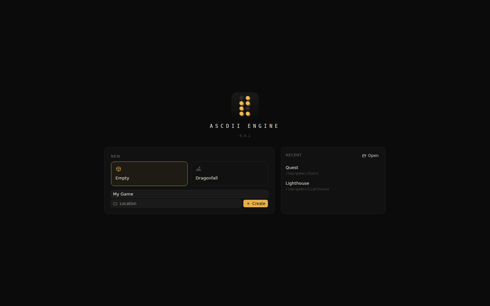
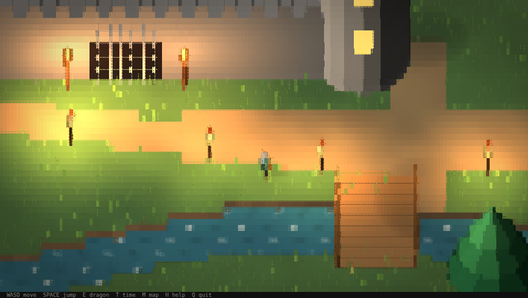

Install
ASCDII Engine consists of three programs, each with its own icon.
| Program | Function |
|---|---|
ascdii | The command line tools; ascdii run opens the editor. Without arguments it prints the list of commands. See CLI reference. |
ascdii-editor | The desktop editor. It is opened through ascdii. |
ascdii-player | Runs games in the terminal. Every build starts from a copy of it, see Build. |
Requirements
| Component | Windows | Linux |
|---|---|---|
| Operating system | Windows 10 or 11, 64 bit | A 64 bit distribution; WSL 2 is supported |
| Editor window | WebView2, included in Windows 10 and 11 | WebKitGTK 4.1: sudo apt install libwebkit2gtk-4.1-0 |
| Sound | No additional software | ALSA (libasound2) |
| Terminal | Windows Terminal | Any terminal with 24 bit color |
Installation
| Platform | Archive | Contents |
|---|---|---|
| Windows | ascdii-0.0.1-windows-amd64.zip | ascdii.exe, ascdii-editor.exe and ascdii-player.exe |
| Linux | ascdii-0.0.1-linux-amd64.tar.gz | ascdii, ascdii-editor and ascdii-player |
- Extract the archive for the platform into any folder, for example
C:\Tools\ascdiior~/tools/ascdii. The files must remain in the same folder. - Optionally, add that folder to
PATHto runascdiifrom any location.
Starting the engine

- Run
ascdii runin a terminal. The editor opens at its start screen.ascdii run <project>opens it with a project, given as its folder or its.ascdiiprojfile. - To start the editor with a double click on Windows, create a shortcut to
ascdii.exeand appendrunto its target. The console window of the shortcut closes as soon as the editor starts. - To create a project, select a template, enter a name, choose the location with Location and press Create. To continue, select a recent project, or press Open to choose a
.ascdiiprojfile.
The start screen returns when a project is closed. Starting ascdii-editor directly also works: it restarts itself through ascdii run. A double click on ascdii.exe itself shows the list of commands and waits for Enter.
Terminal requirements

Games require a terminal with 24 bit color and a font that includes the Braille block (U+2800 to U+28FF). Supported terminals include Windows Terminal, WezTerm, Kitty, Alacritty, GNOME Terminal, iTerm2 and the Visual Studio Code terminal. A window of at least 120 by 40 cells is recommended.
ascdii version
ascdii play ~/games/demoThe appearance depends on how the terminal's font draws Braille characters. Many fonts draw them as small dots with wide gaps, which makes the image look sparse and dark; a smaller font size gives more columns and more detail. Terminals whose fonts draw Braille poorly can run games in block mode, which uses half block characters instead and does not depend on the font:
ascdii play ~/games/demo --blocks
Quest\Quest.exe --blocksBuilding from source
Required only for development of the engine and the editor. All programs build from one Go module.
| Tool | Version | Purpose |
|---|---|---|
| Go | 1.25 or newer | Engine, CLI, editor backend |
| Node.js | 20 or newer | Editor interface (Vue, Vite, Tailwind) |
| Wails CLI | v2.17 | go install github.com/wailsapp/wails/v2/cmd/wails@v2.17.0 |
| WebKitGTK 4.1 headers | Linux and WSL only | sudo apt install libwebkit2gtk-4.1-dev |
make test # vet and tests for the whole module
make all # bin/linux and bin/windows
make cli # ascdii and ascdii-player for both platforms
make editor-linux # ascdii-editor into bin/linux
make editor-windows # ascdii-editor.exe into bin/windows
make dist # the archives listed under Installation, in bin/distThe first make writes .env with a random key for game data, which git ignores; keep it, see The game data key.
bin/linux and bin/windows each hold one complete installation with the same files as the release archive of that platform: ascdii, ascdii-editor and ascdii-player, all for that platform only. A folder runs from any location it is copied to; ascdii starts the editor next to it. Every target first runs make brand, which draws the program icons and the Windows resources that embed them. Windows programs are cross compiled from Linux and WSL without additional toolchains. make editor-dev starts the editor with hot reload and without the launcher, and serves it at http://localhost:34115 for browser developer tools.